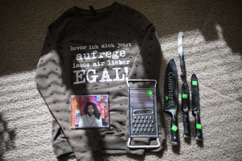
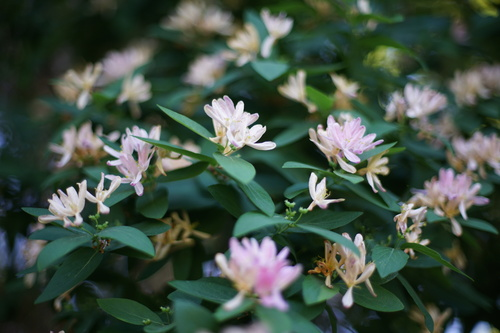
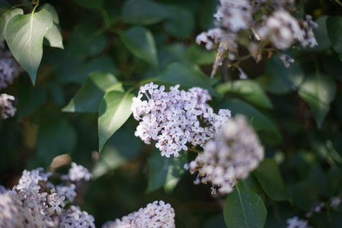
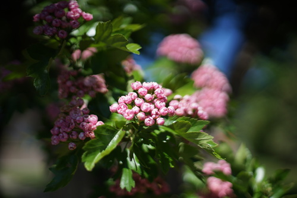

a bit over a week ago i finally ordered a quick release plate for my tripod on ebay and it showed up (and was not a chinese bootleg!) so now i can use the tripod finley so nicely gave me a long time ago...
10 sec. still a bit bright out...

30 sec. you can see arcing in this one (if it werent so d*ng small)
this is so embarrassing i dont think i can wear it out of the house!!! a woman in the store asked me what it says and i just about died of embarrassment when i told her!!! i should have just lied and said i didnt know
i have a cheese grater but its not in good shape so it's being replaced
i think he forgot to add this one in. i was gonna buy one like this for $20 when they were on clearance last christmas and didnt!
i dont think ive actually listened to björk before. some of this sounds similar to yoko kanno x ilaria graziano gits songs tho
i think the cashier undercharged me. i think he realized it was too low and i asked him if he wanted me to take my card out and he didnt seem to care about missing a little
i'm attempting to do some "spring" cleaning and i i decided i dont need any of my ginsu knives or a walmart pencil sharpener... i didnt find much i want to get rid of tbh. sure ginsu knives are sharp but theyre so thin they bend and i end up cutting in a curve and honestly im not a fan. id like to have only quality knives someday in the future but they dont show up too terribly often. im not even sure these cuisinarts count as quality
lieselotte, charlotte, and lucia dollpa orders are arriving in japan! i know mine wont arrive for a very long time but its exciting!! im getting more and more convinced im gonna have to get her faceup redone though. this faceup really isnt doing it for me. at minimum i gotta modify it to give her a smile. charlotte is looking super cute though. i dont love her sculpt as much, but her styling is better in every release! ill leave her on my wishlist and then see how i feel in 5 years
enjoy some bonus flowers since you made it all the way down here! i should have brought out my close up filters. the small gusts of wind picked up every time i put my camera up to my face i swear...
  